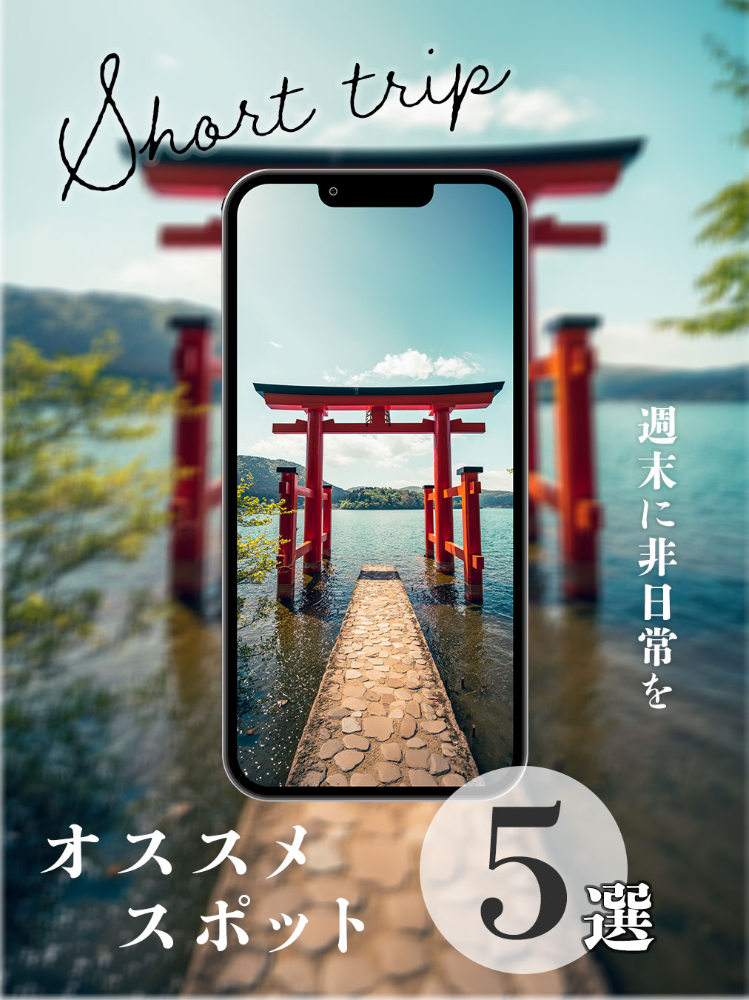

非日常感を伝える写真選び
風景の広がりや旅先の空気感が伝わる写真を大きく使用し、 スクロール中でも目に留まるビジュアルを意識しました。
Project 03 / Instagram
日帰り旅行と絶景スポットをテーマに、20代のユーザーが非日常を感じ、 思わず保存したくなるInstagram投稿を制作しました。


Final Design
Overview
Concept
週末に出かけたくなる、
非日常への入り口。
週末旅行の投稿では、忙しい日常の中でも気軽に楽しめる日帰り旅行の魅力を伝え、 投稿を見たユーザーが「次の休日に行ってみたい」と感じることを目的に制作しました。
おすすめスポットの投稿では、絶景写真の魅力を最大限に活かしながら、 情報を瞬時に理解でき、保存やシェアにつながるデザインを意識しています。
どちらも20代を主なターゲットとし、旅行への期待感や高揚感を高めながら、 写真と文字のバランスを整えました。
Design Points
風景の広がりや旅先の空気感が伝わる写真を大きく使用し、 スクロール中でも目に留まるビジュアルを意識しました。
スマートフォンの小さな画面でも内容が伝わるよう、 タイトルの大きさと文字量にメリハリをつけています。
旅への期待感を高める色使いと余白を取り入れ、 後から見返したくなる洗練された印象に整えました。
Design Gallery